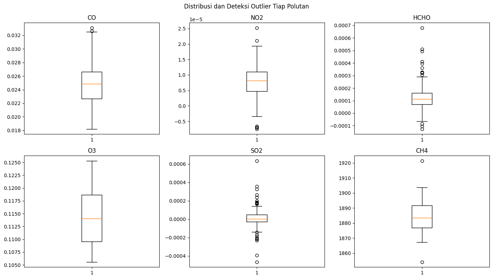
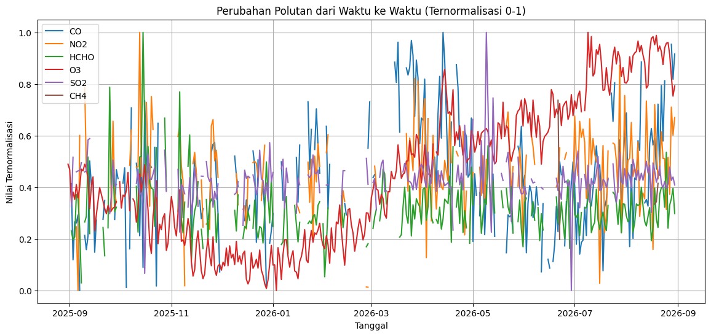
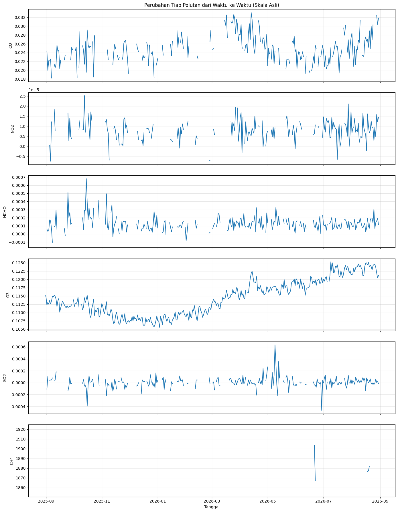

Analisis Data Polutan Udara di Wilayah Minahasa/Manado#
Dokumen ini menyajikan analisis terhadap enam jenis polutan udara (CO, NO2, HCHO, O3, SO2, dan CH4) di wilayah Minahasa/Manado dengan memanfaatkan data satelit Sentinel-5P. Pembahasan pada tugas ini dibatasi hingga tahap Business Understanding dan Data Understanding.
1. Business Understanding#
1.1 Latar Belakang#
Pemantauan kualitas udara merupakan hal penting untuk dilakukan, mengingat polutan di atmosfer dapat berasal dari aktivitas manusia (transportasi, industri, pembakaran, maupun pertanian) atau dari proses alami seperti aktivitas vulkanik. Kombinasi sumber tersebut dapat berbeda-beda antarwilayah, bergantung pada karakteristik masing-masing daerah.
Analisis pada tugas ini difokuskan pada enam jenis polutan udara di wilayah Minahasa/Manado dengan memanfaatkan data Sentinel-5P selama periode pengamatan kurang lebih satu tahun.
1.2 Tujuan Analisis#
Mengumpulkan data enam polutan udara sepanjang periode pengamatan yang ditentukan.
Mengamati perkembangan konsentrasi masing-masing polutan dari waktu ke waktu.
Mengidentifikasi kemungkinan sumber emisi dari tiap polutan.
Melakukan tahap Data Understanding, mencakup pemeriksaan struktur data, missing value, outlier, dan visualisasi time series.
1.3 Manfaat Analisis#
Hasil analisis ini diharapkan dapat memberikan gambaran awal mengenai kondisi kualitas udara di Minahasa/Manado, sekaligus membantu mengenali pola konsentrasi polutan sepanjang waktu. Temuan pada tahap ini juga dapat menjadi landasan bagi tahap analisis lanjutan, misalnya pemodelan atau prediksi kualitas udara.
1.4 Penjelasan dan Kemungkinan Sumber Tiap Polutan#
Polutan |
Apa Itu? |
Kemungkinan Sumber |
|---|---|---|
CO (Karbon Monoksida) |
Gas tak berwarna dan tak berbau, muncul dari pembakaran bahan bakar yang tidak sempurna. Berbahaya karena mengikat hemoglobin lebih kuat dari oksigen. |
Kendaraan bermotor, kebakaran lahan/hutan, pembakaran biomassa |
NO2 (Nitrogen Dioksida) |
Gas coklat kemerahan berbau tajam, terbentuk dari oksidasi NO di udara. Ikut memicu hujan asam dan pembentukan ozon permukaan. |
Kendaraan bermotor, industri, pembangkit listrik |
HCHO (Formaldehida) |
Senyawa organik volatil (VOC), sering dipakai sebagai penanda tak langsung emisi VOC di atmosfer. |
Emisi vegetasi, pembakaran biomassa, kendaraan, industri |
O3 (Ozon Permukaan) |
Bukan gas yang langsung diemisikan, melainkan polutan sekunder hasil reaksi fotokimia NOx dan VOC dengan bantuan sinar matahari. |
Reaksi emisi kendaraan/industri (NOx, VOC) dengan sinar matahari |
SO2 (Sulfur Dioksida) |
Gas tak berwarna berbau tajam, dihasilkan dari pembakaran bahan bakar yang mengandung sulfur. |
Pembakaran bahan bakar fosil, industri, aktivitas vulkanik |
CH4 (Metana) |
Gas rumah kaca dengan efek pemanasan jauh lebih kuat dari CO2, tak berwarna dan tak berbau. |
Pertanian (sawah), peternakan, TPA, kebocoran gas alam |
1.5 Deskripsi Data#
Sumber data: Sentinel-5P (
SENTINEL_5P_L2), diakses melalui layanan openEO pada Copernicus Data Space Ecosystem.Cakupan wilayah: Minahasa/Manado, dibatasi menggunakan polygon GeoJSON yang dibuat lewat geojson.io.
Periode pengamatan yang ditargetkan: 31 Agustus 2025 s.d. 31 Agustus 2026 (realisasi akhirnya sedikit berbeda, lihat Bagian 2.2).
Polutan yang diamati: CO, NO2, HCHO, O3, SO2, dan CH4, masing-masing dalam bentuk rata-rata harian untuk seluruh wilayah kajian.
Keluaran: berkas
.csvdengan kolomdate, CO, NO2, HCHO, O3, SO2, CH4.
2. Data Understanding#
2.1 Pengumpulan Data#
Data diperoleh dari koleksi SENTINEL_5P_L2 melalui openEO. Pengambilan dilakukan per polutan secara terpisah, kemudian hasilnya digabungkan menjadi satu tabel berdasarkan kolom tanggal.
# library openeo untuk ambil data satelit, netCDF4 untuk baca hasil unduhannya
!pip install openeo netCDF4 -q
Menjalankan sel di bawah ini akan menampilkan tautan autentikasi. Buka tautan tersebut, login menggunakan akun Copernicus, lalu kembali ke notebook untuk melanjutkan.
import openeo
import netCDF4
import numpy as np
import pandas as pd
import time
import matplotlib.pyplot as plt
connection = openeo.connect("openeo.dataspace.copernicus.eu").authenticate_oidc()
penjelasan code:
Pustaka
openeodigunakan untuk menghubungkan notebook ke server Copernicus tempat data Sentinel-5P disimpan.Baris terakhir sekaligus membuka koneksi dan melakukan proses autentikasi (login).
2.1.1 Wilayah Penelitian (Area of Interest)#
Batas wilayah kajian disusun dari polygon GeoJSON yang dibuat melalui geojson.io. Polygon tersebut digunakan untuk menghitung rata-rata polutan di dalam area kajian, sedangkan bounding box berfungsi sebagai batas awal saat data ditarik dari server.
AOI = {
"type": "Polygon",
"coordinates": [[
[124.8313269, 1.5946258], [124.8171763, 1.5764393],
[124.8010043, 1.5612837], [124.8141441, 1.5441072],
[124.8303161, 1.5350137], [124.8434559, 1.5117746],
[124.8343591, 1.4794415], [124.8121226, 1.4551914],
[124.7848323, 1.4582227], [124.7666387, 1.4582227],
[124.8444667, 1.394565], [124.8889398, 1.4097217],
[124.9485742, 1.4460975], [124.9687892, 1.4875248],
[124.9809183, 1.5380448], [124.9708108, 1.5673459],
[124.9313914, 1.5905844], [124.8899505, 1.5966466],
[124.8656925, 1.5966466], [124.8313269, 1.5946258],
]]
}
titik = AOI["coordinates"][0]
lons = [p[0] for p in titik]
lats = [p[1] for p in titik]
BBOX = {"west": min(lons), "south": min(lats),
"east": max(lons), "north": max(lats)}
penjelasan code:
AOImerupakan polygon yang menandai batas wilayah Minahasa/Manado.BBOXadalah kotak pembatas terluar dari polygon tersebut, digunakan server untuk membatasi area yang diunduh.
2.1.2 Periode dan Daftar Polutan#
Data ditargetkan untuk periode satu tahun hingga 31 Agustus 2026, yaitu 31 Agustus 2025 – 31 Agustus 2026. Nilai END_DATE ditulis 2026-09-01 karena batas akhir bersifat exclusive, sehingga tanggal 31 Agustus tetap ikut terambil.
START_DATE = "2025-08-31"
END_DATE = "2026-09-01" # supaya 31 Agustus 2026 tetap terambil
POLLUTANTS = ["CO", "NO2", "HCHO", "O3", "SO2", "CH4"]
2.1.3 Fungsi Pengambilan dan Pembacaan Data#
Fungsi ambil_data() menarik data satu polutan dari Sentinel-5P, menghitung rata-rata harian kemudian rata-rata spasial untuk seluruh AOI, dan menyimpan hasilnya sebagai berkas NetCDF.
Fungsi baca_nc() membaca berkas NetCDF tersebut menjadi tabel berisi kolom tanggal dan nilai polutan. Karena struktur dimensi tiap berkas NetCDF dapat berbeda antarpolutan, fungsi ini secara otomatis mencari dimensi yang panjangnya sesuai dengan jumlah tanggal untuk ditetapkan sebagai dimensi waktu. Dimensi lain di luar dimensi waktu kemudian dirata-ratakan agar setiap tanggal hanya memiliki satu nilai.
def ambil_data(polutan):
data = connection.load_collection(
"SENTINEL_5P_L2",
temporal_extent=[START_DATE, END_DATE],
spatial_extent=BBOX,
bands=[polutan]
)
data_harian = data.aggregate_temporal_period(
reducer="mean",
period="day"
)
data_wilayah = data_harian.aggregate_spatial(
reducer="mean",
geometries=AOI
)
file_output = f"{polutan}_Manado.nc"
data_wilayah.execute_batch(
title=f"Data {polutan}",
outputfile=file_output
)
return file_output
def baca_nc(file, polutan):
data = netCDF4.Dataset(file)
nilai = np.ma.filled(
data.variables[polutan][:],
np.nan
)
waktu = data.variables["t"]
tanggal = netCDF4.num2date(
waktu[:],
units=waktu.units
)
jumlah_tanggal = len(tanggal)
# cari dimensi yang panjangnya sama dengan jumlah tanggal -> itu dimensi waktu
time_axis = next(
(axis for axis, ukuran in enumerate(nilai.shape)
if ukuran == jumlah_tanggal),
None
)
if time_axis is None:
raise ValueError(
f"Dimensi waktu tidak ditemukan. Shape: {nilai.shape}"
)
nilai = np.moveaxis(nilai, time_axis, 0)
if nilai.ndim > 1:
nilai = np.nanmean(
nilai,
axis=tuple(range(1, nilai.ndim))
)
return pd.DataFrame({
"date": [x.strftime("%Y-%m-%d") for x in tanggal],
polutan: nilai
})
penjelasan code:
ambil_data()melakukan query data mentah dariSENTINEL_5P_L2, mengagregasinya menjadi rata-rata harian per wilayah, lalu menyimpannya sebagai berkas.nc.baca_nc()membuka berkas.nc, mengonversi nilai kosong menjadi NaN, menyesuaikan dimensi waktu dengan jumlah tanggal, kemudian mengembalikan hasilnya sebagai tabel berisi tanggal dan nilai polutan.
2.1.4 Menjalankan Pengambilan untuk Seluruh Polutan#
Setiap polutan diproses satu per satu, kemudian digabungkan berdasarkan kolom date dan disimpan dalam format CSV.
df = None
for polutan in POLLUTANTS:
print(f"Mengambil: {polutan}")
file = ambil_data(polutan)
data = baca_nc(file, polutan)
if df is None:
df = data
else:
df = df.merge(data, on="date", how="outer")
df = df.sort_values("date").reset_index(drop=True)
df.to_csv("pollutant_data_manado.csv", index=False)
print("\nData berhasil disimpan!")
print("Tanggal pertama:", df["date"].min())
print("Tanggal terakhir:", df["date"].max())
print("Jumlah baris:", len(df))
Mengambil: CO
0:00:00 Job 'j-26083012083546f5aa39a6b4d4ee650b': send 'start'
0:00:03 Job 'j-26083012083546f5aa39a6b4d4ee650b': queued (progress 0%)
0:00:08 Job 'j-26083012083546f5aa39a6b4d4ee650b': queued (progress 0%)
0:00:15 Job 'j-26083012083546f5aa39a6b4d4ee650b': queued (progress 0%)
0:00:23 Job 'j-26083012083546f5aa39a6b4d4ee650b': queued (progress 0%)
0:00:33 Job 'j-26083012083546f5aa39a6b4d4ee650b': queued (progress 0%)
0:00:45 Job 'j-26083012083546f5aa39a6b4d4ee650b': running (progress N/A)
0:01:01 Job 'j-26083012083546f5aa39a6b4d4ee650b': running (progress N/A)
0:01:20 Job 'j-26083012083546f5aa39a6b4d4ee650b': running (progress N/A)
0:01:44 Job 'j-26083012083546f5aa39a6b4d4ee650b': running (progress N/A)
0:02:14 Job 'j-26083012083546f5aa39a6b4d4ee650b': running (progress N/A)
0:02:52 Job 'j-26083012083546f5aa39a6b4d4ee650b': running (progress N/A)
0:03:38 Job 'j-26083012083546f5aa39a6b4d4ee650b': running (progress N/A)
0:04:37 Job 'j-26083012083546f5aa39a6b4d4ee650b': running (progress N/A)
0:05:37 Job 'j-26083012083546f5aa39a6b4d4ee650b': finished (progress 100%)
Mengambil: NO2
0:00:00 Job 'j-26083012141940248fefe983435d559f': send 'start'
0:00:02 Job 'j-26083012141940248fefe983435d559f': queued (progress 0%)
0:00:07 Job 'j-26083012141940248fefe983435d559f': queued (progress 0%)
0:00:14 Job 'j-26083012141940248fefe983435d559f': queued (progress 0%)
0:00:22 Job 'j-26083012141940248fefe983435d559f': queued (progress 0%)
0:00:32 Job 'j-26083012141940248fefe983435d559f': queued (progress 0%)
0:00:45 Job 'j-26083012141940248fefe983435d559f': queued (progress 0%)
0:01:00 Job 'j-26083012141940248fefe983435d559f': running (progress N/A)
0:01:20 Job 'j-26083012141940248fefe983435d559f': running (progress N/A)
0:01:44 Job 'j-26083012141940248fefe983435d559f': running (progress N/A)
0:02:14 Job 'j-26083012141940248fefe983435d559f': running (progress N/A)
0:02:51 Job 'j-26083012141940248fefe983435d559f': running (progress N/A)
0:03:39 Job 'j-26083012141940248fefe983435d559f': finished (progress 100%)
Mengambil: HCHO
0:00:00 Job 'j-2608301218044ec4bc5307772435404a': send 'start'
0:00:02 Job 'j-2608301218044ec4bc5307772435404a': queued (progress 0%)
0:00:07 Job 'j-2608301218044ec4bc5307772435404a': queued (progress 0%)
0:00:14 Job 'j-2608301218044ec4bc5307772435404a': queued (progress 0%)
0:00:22 Job 'j-2608301218044ec4bc5307772435404a': running (progress N/A)
0:00:32 Job 'j-2608301218044ec4bc5307772435404a': running (progress N/A)
0:00:45 Job 'j-2608301218044ec4bc5307772435404a': running (progress N/A)
0:01:00 Job 'j-2608301218044ec4bc5307772435404a': running (progress N/A)
0:01:20 Job 'j-2608301218044ec4bc5307772435404a': running (progress N/A)
0:01:44 Job 'j-2608301218044ec4bc5307772435404a': running (progress N/A)
0:02:14 Job 'j-2608301218044ec4bc5307772435404a': running (progress N/A)
0:02:51 Job 'j-2608301218044ec4bc5307772435404a': running (progress N/A)
0:03:38 Job 'j-2608301218044ec4bc5307772435404a': finished (progress 100%)
Mengambil: O3
0:00:00 Job 'j-2608301221494e18a37f7634b6e75eb2': send 'start'
0:00:02 Job 'j-2608301221494e18a37f7634b6e75eb2': created (progress 0%)
0:00:07 Job 'j-2608301221494e18a37f7634b6e75eb2': queued (progress 0%)
0:00:14 Job 'j-2608301221494e18a37f7634b6e75eb2': queued (progress 0%)
0:00:22 Job 'j-2608301221494e18a37f7634b6e75eb2': queued (progress 0%)
0:00:32 Job 'j-2608301221494e18a37f7634b6e75eb2': running (progress N/A)
0:00:44 Job 'j-2608301221494e18a37f7634b6e75eb2': running (progress N/A)
0:01:00 Job 'j-2608301221494e18a37f7634b6e75eb2': running (progress N/A)
0:01:19 Job 'j-2608301221494e18a37f7634b6e75eb2': running (progress N/A)
0:01:43 Job 'j-2608301221494e18a37f7634b6e75eb2': running (progress N/A)
0:02:13 Job 'j-2608301221494e18a37f7634b6e75eb2': running (progress N/A)
0:02:51 Job 'j-2608301221494e18a37f7634b6e75eb2': running (progress N/A)
0:03:38 Job 'j-2608301221494e18a37f7634b6e75eb2': finished (progress 100%)
Mengambil: SO2
0:00:00 Job 'j-2608301225334032907867f35e4d60f5': send 'start'
0:00:02 Job 'j-2608301225334032907867f35e4d60f5': queued (progress 0%)
0:00:08 Job 'j-2608301225334032907867f35e4d60f5': queued (progress 0%)
0:00:14 Job 'j-2608301225334032907867f35e4d60f5': queued (progress 0%)
0:00:22 Job 'j-2608301225334032907867f35e4d60f5': queued (progress 0%)
0:00:32 Job 'j-2608301225334032907867f35e4d60f5': queued (progress 0%)
0:00:45 Job 'j-2608301225334032907867f35e4d60f5': running (progress N/A)
0:01:00 Job 'j-2608301225334032907867f35e4d60f5': running (progress N/A)
0:01:20 Job 'j-2608301225334032907867f35e4d60f5': running (progress N/A)
0:01:44 Job 'j-2608301225334032907867f35e4d60f5': running (progress N/A)
0:02:14 Job 'j-2608301225334032907867f35e4d60f5': running (progress N/A)
0:02:51 Job 'j-2608301225334032907867f35e4d60f5': finished (progress 100%)
Mengambil: CH4
0:00:00 Job 'j-260830122833438faf389858c0de94ca': send 'start'
0:00:02 Job 'j-260830122833438faf389858c0de94ca': created (progress 0%)
0:00:07 Job 'j-260830122833438faf389858c0de94ca': queued (progress 0%)
0:00:14 Job 'j-260830122833438faf389858c0de94ca': queued (progress 0%)
0:00:22 Job 'j-260830122833438faf389858c0de94ca': queued (progress 0%)
0:00:32 Job 'j-260830122833438faf389858c0de94ca': queued (progress 0%)
0:00:44 Job 'j-260830122833438faf389858c0de94ca': running (progress N/A)
0:01:00 Job 'j-260830122833438faf389858c0de94ca': running (progress N/A)
0:01:19 Job 'j-260830122833438faf389858c0de94ca': running (progress N/A)
0:01:43 Job 'j-260830122833438faf389858c0de94ca': running (progress N/A)
0:02:13 Job 'j-260830122833438faf389858c0de94ca': running (progress N/A)
0:02:51 Job 'j-260830122833438faf389858c0de94ca': finished (progress 100%)
Data berhasil disimpan!
Tanggal pertama: 2025-08-31
Tanggal terakhir: 2026-08-30
Jumlah baris: 363
penjelasan code:
Iterasi dilakukan untuk setiap polutan, kemudian digabungkan menggunakan
merge(..., how="outer")agar tanggal yang tidak memiliki nilai pada satu polutan tetap tersimpan sebagai NaN, bukan hilang dari tabel.Hasil akhirnya diurutkan berdasarkan tanggal, lalu disimpan ke berkas
pollutant_data_manado.csv.
2.2 Struktur dan Isi Data#
Mulai bagian ini, data dibaca kembali dari berkas CSV yang telah tersimpan sehingga notebook dapat dijalankan ulang dari titik ini tanpa perlu mengunduh data dari awal. Selanjutnya dilakukan pemeriksaan struktur data, meliputi jumlah baris, nama kolom, tipe data, dan rentang tanggal.
df = pd.read_csv("pollutant_data_manado.csv", parse_dates=["date"])
df = df.sort_values("date").reset_index(drop=True)
POLLUTANTS = ["CO", "NO2", "HCHO", "O3", "SO2", "CH4"]
df.head()
| date | CO | NO2 | HCHO | O3 | SO2 | CH4 | |
|---|---|---|---|---|---|---|---|
| 0 | 2025-08-31 | 0.025826 | 0.000003 | 0.000119 | 0.115216 | -0.000039 | NaN |
| 1 | 2025-09-01 | NaN | NaN | NaN | 0.114812 | NaN | NaN |
| 2 | 2025-09-02 | 0.024364 | NaN | 0.000059 | 0.112275 | -0.000109 | NaN |
| 3 | 2025-09-03 | 0.019973 | NaN | 0.000032 | 0.113091 | 0.000103 | NaN |
| 4 | 2025-09-04 | 0.022163 | NaN | 0.000040 | 0.112525 | NaN | NaN |
print(f"Jumlah baris: {len(df)}")
print(f"Kolom: {list(df.columns)}")
print(f"Rentang tanggal: {df['date'].min().date()} s.d. {df['date'].max().date()}")
print()
print("Tipe data per kolom:")
print(df.dtypes)
Jumlah baris: 363
Kolom: ['date', 'CO', 'NO2', 'HCHO', 'O3', 'SO2', 'CH4']
Rentang tanggal: 2025-08-31 s.d. 2026-08-30
Tipe data per kolom:
date datetime64[ns]
CO float64
NO2 float64
HCHO float64
O3 float64
SO2 float64
CH4 float64
dtype: object
# cek tanggal mana saja yang tidak ada di data (hilang total di semua polutan)
semua_tanggal = pd.date_range(start=df["date"].min(), end=df["date"].max())
tanggal_hilang = semua_tanggal.difference(df["date"])
print(f"Jumlah tanggal hilang: {len(tanggal_hilang)}")
print(tanggal_hilang)
Jumlah tanggal hilang: 2
DatetimeIndex(['2025-09-20', '2026-04-15'], dtype='datetime64[ns]', freq=None)
penjelasan code:
pd.date_range()menghasilkan daftar seluruh tanggal dari awal hingga akhir periode data secara berurutan tanpa ada yang terlewat..difference(df["date"])membandingkan daftar tersebut dengan tanggal yang benar-benar tercatat didf, sehingga diperoleh tanggal yang hilang sepenuhnya (tidak memiliki nilai pada satu pun polutan).
Data yang berhasil terekam ternyata berakhir pada 30 Agustus 2026, bukan 31 Agustus 2026 sebagaimana ditargetkan. Selisih satu hari ini kemungkinan disebabkan oleh jeda pemrosesan (processing lag) pada server Copernicus, karena data satelit untuk hari-hari terakhir biasanya belum sepenuhnya selesai diproses pada saat query dijalankan. Selain itu, terdapat dua tanggal (20 September 2025 dan 15 April 2026) yang sama sekali tidak memiliki observasi pada keenam polutan, kemungkinan karena wilayah kajian tertutup awan secara penuh pada tanggal-tanggal tersebut. Setelah memperhitungkan hal-hal tersebut, dataset akhir yang tersimpan berjumlah 363 baris, mencakup rentang 31 Agustus 2025 – 30 Agustus 2026.
2.3 Statistik Deskriptif#
print("Statistik deskriptif:")
df[POLLUTANTS].describe()
Statistik deskriptif:
| CO | NO2 | HCHO | O3 | SO2 | CH4 | |
|---|---|---|---|---|---|---|
| count | 252.000000 | 216.000000 | 273.000000 | 359.000000 | 264.000000 | 11.000000 |
| mean | 0.024945 | 0.000008 | 0.000126 | 0.114423 | 0.000010 | 1885.325974 |
| std | 0.003171 | 0.000005 | 0.000092 | 0.005369 | 0.000095 | 17.910926 |
| min | 0.018206 | -0.000007 | -0.000127 | 0.105557 | -0.000466 | 1854.022095 |
| 25% | 0.022698 | 0.000005 | 0.000070 | 0.109555 | -0.000028 | 1876.892831 |
| 50% | 0.024868 | 0.000008 | 0.000114 | 0.114012 | 0.000005 | 1883.358667 |
| 75% | 0.026647 | 0.000011 | 0.000161 | 0.118641 | 0.000048 | 1891.706775 |
| max | 0.033090 | 0.000025 | 0.000681 | 0.125313 | 0.000636 | 1921.479248 |
Terlihat bahwa skala nilai antarpolutan berbeda cukup jauh — CH4 berada pada kisaran ribuan, sementara NO2 dan SO2 berada pada kisaran 0,00001. Perbedaan ini wajar mengingat satuan konsentrasi tiap gas memang tidak sama, dan menjadi alasan mengapa grafik time series pada bagian berikutnya perlu dinormalisasi terlebih dahulu agar dapat dibandingkan pada satu sumbu yang sama.
2.4 Missing Value#
Data satelit rentan memiliki missing value, umumnya disebabkan oleh tutupan awan yang tebal, kualitas observasi yang rendah, atau data yang telah difilter melalui proses QA (quality assurance) oleh Sentinel-5P.
missing = df.isnull().sum()
missing_pct = (missing / len(df) * 100).round(2)
missing_summary = pd.DataFrame({"jumlah_null": missing, "persen_null": missing_pct})
missing_summary
| jumlah_null | persen_null | |
|---|---|---|
| date | 0 | 0.00 |
| CO | 111 | 30.58 |
| NO2 | 147 | 40.50 |
| HCHO | 90 | 24.79 |
| O3 | 4 | 1.10 |
| SO2 | 99 | 27.27 |
| CH4 | 352 | 96.97 |
Persentase missing value bervariasi antarpolutan: NO2 sekitar 40,5%, CO 30,6%, SO2 27,3%, dan HCHO 24,8%. Kondisi yang paling mencolok terdapat pada CH4, yang datanya kosong hingga sekitar 97% (hanya 11 dari 363 hari yang memiliki nilai). Hal ini diduga karena band CH4 pada Sentinel-5P memang jarang memiliki cakupan atau kualitas observasi yang memadai untuk wilayah sekecil Minahasa/Manado, ditambah gangguan tutupan awan tropis yang cukup sering terjadi.
Karena jumlah data yang tersedia sangat terbatas, kesimpulan mengenai CH4 belum dapat diambil secara meyakinkan pada tahap ini, dan hal tersebut dicatat sebagai salah satu keterbatasan data. Penanganan missing value (seperti imputasi atau penghapusan) belum dilakukan pada tahap ini karena cakupan tugas masih dibatasi hingga Data Understanding.
2.5 Deteksi Outlier / Data Aneh#
Pemeriksaan outlier dilakukan menggunakan metode IQR: nilai yang berada di bawah Q1 - 1.5×IQR atau di atas Q3 + 1.5×IQR dikategorikan sebagai outlier. Nilai ekstrem tersebut tidak langsung dihilangkan karena berpotensi mencerminkan kondisi nyata, misalnya lonjakan polusi akibat kebakaran lahan.
outlier_summary = []
for pol in POLLUTANTS:
q1, q3 = df[pol].quantile([0.25, 0.75])
iqr = q3 - q1
lower, upper = q1 - 1.5 * iqr, q3 + 1.5 * iqr
n_outlier = ((df[pol] < lower) | (df[pol] > upper)).sum()
n_valid = df[pol].notna().sum()
outlier_summary.append({
"polutan": pol,
"jumlah_outlier": n_outlier,
"persen_outlier": round(n_outlier / n_valid * 100, 2) if n_valid else 0
})
outlier_df = pd.DataFrame(outlier_summary)
outlier_df
| polutan | jumlah_outlier | persen_outlier | |
|---|---|---|---|
| 0 | CO | 2 | 0.79 |
| 1 | NO2 | 7 | 3.24 |
| 2 | HCHO | 14 | 5.13 |
| 3 | O3 | 0 | 0.00 |
| 4 | SO2 | 20 | 7.58 |
| 5 | CH4 | 2 | 18.18 |
penjelasan code:
Batas atas dan bawah outlier dihitung menggunakan metode IQR, kemudian dihitung jumlah data yang berada di luar rentang tersebut untuk masing-masing polutan.
fig, axes = plt.subplots(2, 3, figsize=(14, 8))
axes = axes.flatten()
for ax, pol in zip(axes, POLLUTANTS):
ax.boxplot(df[pol].dropna(), vert=True)
ax.set_title(pol)
fig.suptitle("Distribusi dan Deteksi Outlier Tiap Polutan")
plt.tight_layout()
plt.show()

penjelasan code:
Dibuat 6 subplot (2 baris × 3 kolom), masing-masing diisi dengan
ax.boxplot()untuk satu polutan.
Berdasarkan tabel maupun boxplot, jumlah outlier pada sebagian besar polutan tergolong kecil, berkisar antara 0% (O3) hingga sekitar 7,6% (SO2), sehingga data secara umum cukup stabil. Persentase outlier CH4 tampak tinggi (sekitar 18%), namun angka ini perlu dimaknai secara hati-hati karena hanya dihitung dari 11 data yang valid akibat missing value yang sangat besar pada polutan tersebut.
Hal lain yang perlu dicatat, nilai minimum pada NO2, HCHO, dan SO2 di statistik deskriptif sebelumnya sedikit negatif. Secara fisik, konsentrasi gas tidak mungkin bernilai negatif — kondisi ini muncul akibat noise pada proses retrieval satelit ketika konsentrasi sebenarnya sangat rendah atau mendekati nol, dan cukup umum dijumpai pada data Sentinel-5P. Nilai tersebut tetap dipertahankan pada tahap ini dan tidak diperlakukan sebagai kesalahan input.
2.6 Grafik Time Series#
Pada bagian ini dibuat dua jenis grafik: grafik gabungan yang telah dinormalisasi ke rentang 0–1 untuk membandingkan pola seluruh polutan dalam satu sumbu, serta grafik terpisah per polutan dengan skala aslinya agar perubahan masing-masing polutan — termasuk CH4 yang datanya sangat terbatas — tetap dapat teramati dengan jelas.
df_normalisasi = df[POLLUTANTS].copy()
for polutan in POLLUTANTS:
nilai_min = df_normalisasi[polutan].min()
nilai_max = df_normalisasi[polutan].max()
df_normalisasi[polutan] = (df_normalisasi[polutan] - nilai_min) / (nilai_max - nilai_min)
plt.figure(figsize=(14, 6))
for polutan in POLLUTANTS:
plt.plot(df["date"], df_normalisasi[polutan], label=polutan)
plt.title("Perubahan Polutan dari Waktu ke Waktu (Ternormalisasi 0-1)")
plt.xlabel("Tanggal")
plt.ylabel("Nilai Ternormalisasi")
plt.legend()
plt.grid()
plt.show()

fig, axes = plt.subplots(len(POLLUTANTS), 1, figsize=(14, 3 * len(POLLUTANTS)), sharex=True)
for ax, polutan in zip(axes, POLLUTANTS):
ax.plot(df["date"], df[polutan], color="tab:blue")
ax.set_ylabel(polutan)
ax.grid(alpha=0.3)
axes[0].set_title("Perubahan Tiap Polutan dari Waktu ke Waktu (Skala Asli)")
axes[-1].set_xlabel("Tanggal")
plt.tight_layout()
plt.show()

penjelasan code:
Grafik pertama menampilkan seluruh polutan yang telah dinormalisasi ke rentang 0–1, sehingga dapat ditumpuk dalam satu sumbu meskipun satuannya berbeda-beda.
Grafik kedua memberikan subplot tersendiri untuk tiap polutan dengan nilai aslinya (tanpa normalisasi), agar CH4 yang datanya sangat terbatas tidak “tenggelam” di dalam grafik gabungan.
2.7 Kesimpulan Data Understanding#
Data berhasil dikumpulkan untuk keenam polutan selama periode 31 Agustus 2025 – 30 Agustus 2026, menghasilkan total 363 baris data. Realisasi tanggal akhir yang lebih awal satu hari dari target (31 Agustus 2026) disebabkan oleh jeda pemrosesan data satelit di server Copernicus.
Missing value bervariasi cukup besar antarpolutan, mulai dari yang relatif kecil (O3, sekitar 1,1%) hingga NO2, CO, dan SO2 yang berkisar 27–41%, sampai yang paling ekstrem pada CH4 (sekitar 97%). Kondisi CH4 ini menjadi salah satu keterbatasan utama data yang perlu dicatat dan kemungkinan memerlukan sumber data tambahan pada tahap analisis lanjutan. Outlier yang terdeteksi melalui metode IQR umumnya berjumlah kecil untuk sebagian besar polutan, meskipun persentase outlier CH4 tampak tinggi karena jumlah data validnya yang sangat sedikit. Beberapa nilai negatif pada NO2, HCHO, dan SO2 tergolong noise wajar dari proses retrieval satelit, bukan merupakan kesalahan input data.
Grafik time series, baik dalam bentuk gabungan maupun per polutan, menunjukkan adanya fluktuasi harian serta pola yang berbeda-beda antarpolutan sepanjang periode pengamatan.